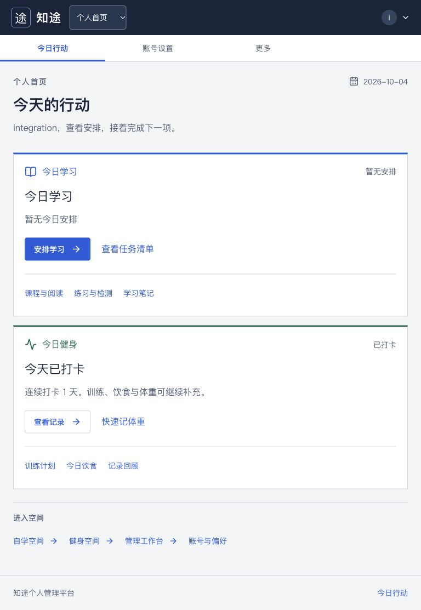
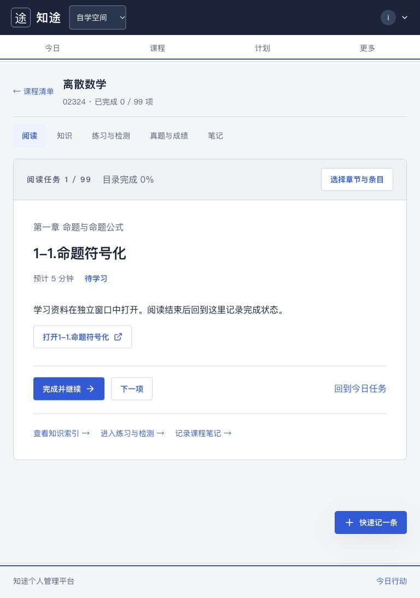
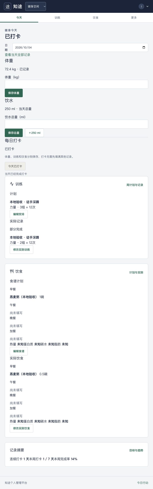
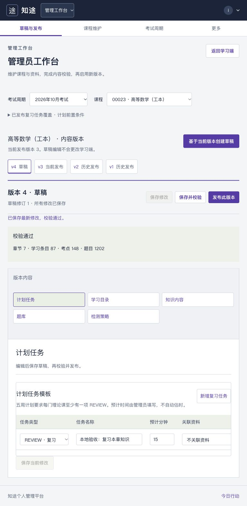

知途：任务桌面改版
真实本地接口与数据副本。基线与新界面均为浏览器截图。健身记录状态因验收写入有所不同。
验收记录与限制 · 完整功能入口 ·
打开本地新界面
个人首页 · 桌面1440px
手机390px
查看768px平板

自学阅读 · 桌面1440px
手机390px
查看768px平板

健身今天 · 桌面1440px
手机390px
查看768px平板

管理内容编辑 · 桌面1440px
手机390px
查看768px平板
